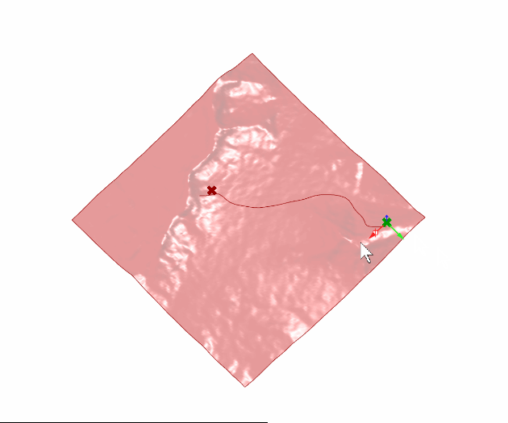

|
|-|-|
|
|-|-||  | |
|-|-|
Creates shortest path between two points.
Calculates shortest path with the help of Line Segment Network Analysis. However, street network analysis needs an existing street network. Since this module wants to generate shortest path, it cannot use the existing street network. Therefore, it generates artificially an underlying grid of lines and chooses the most suitable lines from origin to destination.
By introducing weights such as the slope of the terrain, the taken path can be constrained so that it does not follow steep paths and still tries to find the most suitable path. It can lead to serpentine like paths.
Underlying artificial grid restricts calculation time and options.
Shortest path might intersect with existing street network.